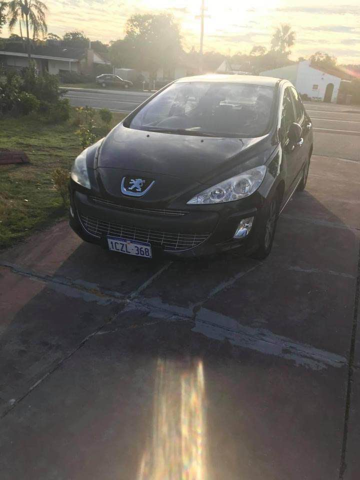

Even if the car is parked inside your garage, it is better to you sell it to us. It will not be beneficial to you at all. That car is not making you earn money, but if you contact us, we can give you the monetary benefit, which others may not. We pay top cash for Peugeot vehicles, which you can use to purchase a newer model of it. We are not trying to show-off, but the truth is that we are one of a kind in the city of Melbourne and surrounding.
If you are looking for a Peugeot in Melbourne, then you can contact us. We provide a top class and fair service for sale of your car. All of us believe in honesty and so, we offer you a fair and unbiased deal. So, if you are interested in selling your old car, then just fill out the contact form and get in touch with us. We are ready to help you to sell your Peugeot and also pay the buyers within the given time frame. When to sell your old car This is the obvious question that you should have in your mind before selling your old car. It is recommended that you should sell it after two years from the date of its manufacturing. When you sell it, you need to make sure that it is not worth the price that you pay for it.

It is also important that you should know that we will not ask for a lot of money to purchase your car. There is no doubt that we can get more money than what you are looking for, but we are not going to rip you off. You can leave a deposit, and then we will transfer the rest. For more information, please feel free to contact us. How to sell your car fast It is also important to inform you that when you sell your car to us, you will not have to worry about an accident happening with your car. If you leave it in our possession, we will take care of it, and we do not go out of our way to make anyone worry. The final amount of money that you will get will be done directly, which you can use to buy the new model of it.
You do not have to worry about our overpriced prices. You do not have to worry about our pressuring methods. You only have to worry about whether your car will be sold to you or not. The only thing you have to pay is the taxes that you are required to pay as soon as you pay the seller. When you pay the seller for your Peugeot and even before you drive away in your new car, we will send you a short survey. We will ask you to fill in the survey, to find out whether we can show you the pictures of the vehicle before the car is sold. If we receive positive results, we will also send you photos of the new car before you take delivery of it. Do not wait to get the deal you need today. If you contact us, we will show you the right prices and the right deals on the spot.
The good thing is that there are no hidden charges when you sell your car to us. However, there are also no guarantees as it is a cash business. However, you are sure to get good value for your money. You just need to pay us in cash, which will be deposited to your account within 24 hours. What is the cash payment for my Peugeot? There are different kinds of prices for a car depending on its class, age, and condition. This list includes: 1. The price for an older model of Peugeot is In general, it is more than $4,000 for a new one, and it can range up to $10,000 depending on the condition and your preference. 2. We charge you a minimum of A lot of cars sell for over $10,000 and you can pay up to $12,000 without the need to worry about losing money.
Our mailing address and phone number is the same. But make sure you are serious about your claim. That is why it is wise to contact us. First you need to fill out the form available on our website and pay the required money. Why is it Better to Sell the Car? Here is the shocking fact. Those who sell their car to us make good money. We are not trying to make you lose. But the truth is that car is not your asset. It is another person's asset. You need to keep in mind that if you sell your car to us, you can make good money. On the other hand, you have to make money out of it. You should be serious about your claim. See what we are doing When we look at the information provided on your car, you will see we are experts in this field.
At a time, when you are just like a three-year-old kid and you want to feel the mother's love, we are ready to take care of you. We have been in the car business in Australia, and we are looking forward to going to London. We hope you will contact us, and we are ready to help you in all the possible ways. We would like to give you the peace of mind, and money for your car. We are sure that this is something that you are looking for. We are ready to provide you with all the help that you need in this regard. If you are willing to sell your car to us, then contact us, and we will give you the best price that suits your need.
Address:103 Sheffield Rd, Welshpool WA 6106
Phone: (08) 9358 1392